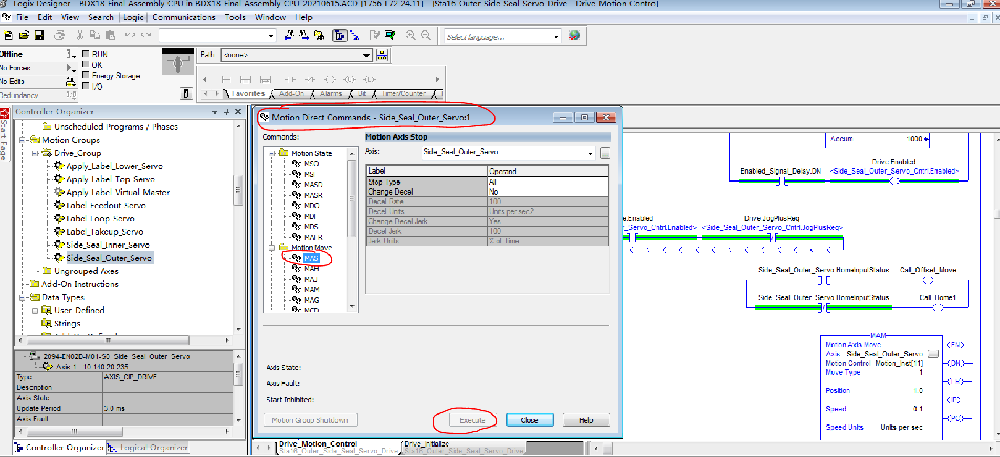

二、问题明细及解决办法
-
1,Final ASSY和中间端部分安全门缺失 《返回主页》
■问题描述:
在LINE18主体拼装好后，发现部分安全门缺失。在组装、注塑货柜全部开启并安装后，依旧没能找到缺失的门板（5块安全门板），Team都没有印象门板去哪里了！ 甚至自己花费了大力气，将包装的木箱子移开，开了好几个箱子也没能找到！！😓
■解决办法:
找了供应商现场测量（JML）,准备重新做，还得买安全锁！但始终想不明白门板丢到哪里了，后来缓了几天，因为商检需求，包装需要拆箱查验。所以安排顺达拆了包装的箱子，最终在包装的箱子里找到了门板！
■经验教训：
TUAS打包时，做的还是不够细致！并没有做到每个Pallet里面货物的详细记录、照片！导致走了弯路！
-
2,针尖视觉PC主机无法开机《返回主页》
■问题描述:
针尖视觉电脑主机运行中，自己突然关机，无法开机！经检测，电源直接无输出。
■解决办法:
送修，顾工：15850121109。打开🖥、电源，发现里面有类似润滑油物质。可能是因为润滑油导致短路！ 外修花费4天（供应商买备件）。后来询问了TUAS，UV烘箱站表面有很多油污的由来。 Jack告知，那边曾经因为点胶站排废胶水罐子满了，胶水被负压抽到了真空管路，导致到处都是胶水，所以雾化的胶水通过电柜排风扇进入电柜，再经过PC散热风扇进入PC主机！
■经验教训：
尽量考虑、避免，现场的各种不同管路串通！
-
3,Final ASSY "Side_Seal_Outer_Servo"报警《返回主页》
■问题描述:
设备上电后，发现后端外侧密封伺服报警！程序里显示感叹号！且从模块属性-"module info"，显示严重故障！无法复位！此问题困扰很久， 前后差不多2周，联系了AB好几波人，最后在自己的反复测试中解决！😓
■解决办法:
①，查看了伺服驱动器显示报错"INIT FLT M21",查询了手册该代码代表"Factory Configuration Error"。于是更换了同型号的驱动器 2094-EN02D-M01-S0,通过BootP更改其IP地址与原地址一致。
②，更换驱动器后，上电。在studio5000程序里，对应伺服模块属性，module标识显示“不匹配”，有报错"物理module与项目里配置的module不一致"！


检查发现新换的驱动器版本为3.1，而程序里组态配置的是2.6！最让人疑惑的是，程序里主版本只有1和2可选，没有3版本！即时重新创建，也是如此。 如下图，
不明所以，而且这个是和电子密钥没有半毛钱关系的。当时，相关支持说禁用密钥，压根不顶用！无意间发现，在另外一台电脑上（WXX）上新建模块时， 可以选主版本3，奇怪😓！都是购买的正版软件，怎么会这样！
后来还是电话咨询慧桥倪工，其提到这个硬件主版本需要在rockwell官网上下载（需登录）AOP "Add-On-Profile",如下图，
注意：我们要下载的是AOP文件，当然确切的说是2094-EN02D-M01-S0的AOP。但是如果你直接搜索2094**，会出现如下界面，这样实际上 你只是下载了一个firmware固件，而并非我们想要的AOP文件！
建议做法是：点击“Add-On_Profile”进入新界面后，直接点击搜索按钮。然后选择如图第二项，再在右侧下载按钮点击后，选择对应的AOP文件。
之后点击"Download Now"
下载过程简单，官网默认先下载download Manager文件，然后打开Download Manager文件，即可自动下载。下载完成后，解压文件，打开 文件夹，安装即可（安装时需要将AB相关软件关闭，RSLinx,Studio）
安装完成，再次打开studio软件，发现伺服属性里面，主版本就多了3版本可选！😊🤩
③，本以为大功告成，没想到.....再将版本程序配置里也改成3.1后，不匹配问题 是解决了。但是发现该伺服还是 不能回原点，不动啊！经过对比发现，该伺服状态在"program mode",而别人在"run mode";该伺服驱动器"S04" Configuration not Configured报警！

④，根据提示，与慧桥技术人员沟通，通过远程协助，尝试做电机的"Tune"。可是Tune就是不动，期间慧桥 曾将"Motor Catalog"改为none,download过一次程序，之后又改回原参数再次download。折腾一番，之后设备断电在上电时，伺服 确实动了一下，但是立马到极限报警了（向里侧顶死）！感觉这一步，似乎不是必要的。后来慧桥建议，将2个电机线对调，Oh,my God😓。 思索再三，我还是没有那样尝试...

⑤，考虑之前上下伺服回不了原点，直接触碰一下原点sensor的问题。当时放置了一个小金属片在外侧伺服原点sensor上，关门复位，终于动啦， 往外侧动啦，可是直接又外侧顶死😓...不能停在中间位置（我们的目标是将其停在大概中间位置，因为其在tune时，会走一定距离，避免极限）， 如果走一半，立马开门，停是停了，但是不关门，伺服因为安全又报警，无法"Tune",而关上门，复位报警时，伺服还是会走到极限😭！
⑥，查询程序，是因为伺服每次使能自动回原点导致以上问题。所以本次在伺服位置（外烫头）走到差不多中间时，拉门， 然后在程序里屏蔽”自动回原点功能“。屏蔽后，再关门，复位，伺服不在动作。
⑦，但是，此时发现"Tune"操作按钮是灰色的，无法操作。后来才知道，这是因为伺服的状态不在无报警的"stopped"状态，所以无法操作！ 但是，肯定不能开门的，因为开门，安全还是会出发伺服报警，报警状态也是不能执行"Tune"操作的！
⑧，此时在程序 "Motion Group"里面，点击该伺服轴选择 Motion Direct Commands,执行MAS指令，将其停止，如下图
⑨，此刻，终于可以正常tune了，自动tune完成后，需要测试一下方向Polarity。点击Test Polarity后，执行后，系统会提示你当前的方向，自己选择即可。 实际测试下来，LINE18 side seal outer servo像外打开时，方向是"Reverse"。接受测试结果。由于是自动tune，不需要担心参数有什么变更！
⑩，终于，报警"Communication not configured"消除了，伺服也可以正常回原点了开心😃。
经此一役，在此区分几个概念：EDS,当软件里硬件图片前面显示？时，可能是对应硬件的EDS缺失，EDS缺失只是表面rockwell软件 "不认识"该硬件， 但是不影响使用。固件（Firmware),我的理解，firmware时出厂时该硬件的一个软件版本，可以通过ControlFlash更新固件，固件还是到官网对应下载。 AOP(Add-On-Profile),此次受此困扰。我的理解类似是rockwell软件的补丁包，却什么补什么。
■经验教训：
伺服控制，还是自己技术上瓶颈！不了解！
-
4,OverHead Message Display无法显示具体的报警信息《返回主页》
■问题描述:
从TUAS转移过来的4个LED报警显示屏，无法显示具体报警信息，只能显示MES Code码
■解决办法:
未能找到原因，不过经过测试现有的报警显示软件studio在通讯里配置IP地址和变量后是可以直接获取当前PLC的报警code的。Very Great! 这里，当时自己还想复杂了，多亏WXX提醒。
后续直接安装2个电视，类似与LINE22 & 23显示报警。并且中英文可切换
■经验教训：
遇事，思考，尝试！
-
5,Lube Cart流量计2无法显示流量《返回主页》
■问题描述:
其中1个流量计无法显示流量，显示0Ml/Min
■解决办法:
反复拆装流量计，更换齿轮，更换sensor都不好！最后还是在反复拆装中，显示了流量！最终没整明白原因...
■经验教训：
这里在判断哪个sensor不好时，开始方向是跑偏了！有时，我们单看一个问题，可以避免干扰！
-
6,校验问题《返回主页》
■问题描述:
检验时，流量计不合格，压力表坏，压力表报警值设置
■解决办法:
流量计，基于实测值矫正K值
压力表，同时按上下键，归零；长按S键进行设置，如果出现"F*"，则F0为单位设置，F1为显示颜色、上下限、极性设置； 如果不出现"F*"，则也是在该界面可以依次设置颜色、上下限、极性等设置
■经验教训：
校验方法不了解，出现问题时，没有第一时间想到解决办法！K值？
跌跌撞撞，勉强在到期前完成IQ，总的来说自己的计划还是待提升。往后续验证顺利。